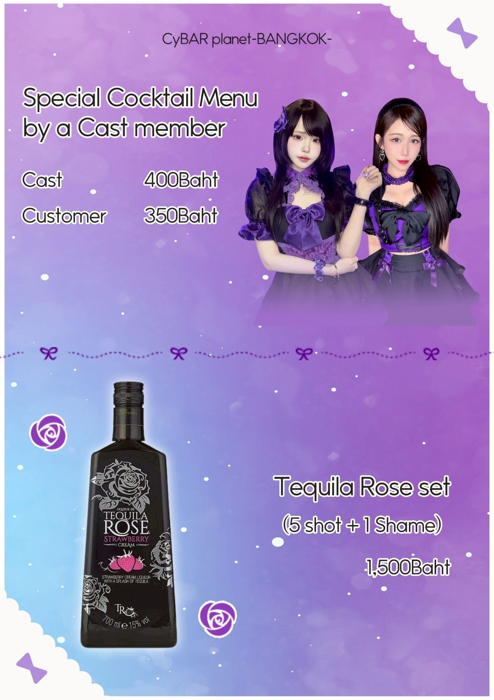

CyBAR planet Bangkok — Japanese maid cafe and bar
System
- VAT
- 7%
- ค่าเปิดโต๊ะ / Table charge
- 150Baht / 1H
- การต่อเวลา / Extension
- 150Baht / 1H
Cast menu
- ค็อกเทล / Cocktail
- 300Baht
- ช็อต / Shot
- 400Baht
- โชจู / SOJU
- 500Baht
- ถ่ายเชกิ / CHEKI
- 350Baht
- ชิงช้า / Tequila Ferris Wheel
- 4,000Baht
Drinks
Soft drink 100Baht
- โคล่า / Cola
- จินเจอร์เอล / Ginger ale
- สไปรท์ / Sprite
- น้ำส้ม / Orange juice
- น้ำแอปเปิ้ล / Apple juice
- น้ำโซดา / Carbonated Water
- น้ำเปล่า / Water
Beer, Whiskey, Sho-Chu & Another
- Singha Beer
- 150Baht
- Asahi Beer
- 200Baht
- Hoegaarden
- 300Baht
- Johnnie Walker Red Label
- 300Baht
- Ao
- 600Baht
- SUNTORY whiskey
- 400Baht
- JINRO
- 300Baht
- “Tomino Houzan” Sho-Chu
- 350Baht
- “Kurokirishima” Sho-Chu
- 300Baht
- Chamisulu
- 400Baht
- Ume-shu
- 300Baht
- Tequila QUERVO1800
- 400Baht
Bottle Whiskey
- NIKKA TAKETSURU
- 7,200Baht
- SUNTORY KAKU
- 4,200Baht
- SUNTORY AO
- 7,800Baht
- SUNTORY YAMAZAKI
- 13,200Baht
- SUNTORY HIBIKI
- 13,800Baht
- JOHNNIE WALKER RED / BLACK / GOLD / BLUE
- 3,480 / 4,200 / 6,600 / 30,000Baht
Cocktail 250Baht
- Gin and Tonic
- Gin Buck
- Gin Lime
- Vodka Tonic
- Moscow Mule
- Screwdriver
- Cassis and Soda
- Strawberry and Soda
- Malibu Coke
- Horoyoi, Strong Zero
- 300Baht
- Tequila Rose
- 8,000Baht
Non-alcohol champagne
- PREMIRE SALUTE
- 980Baht
- Rimuss
- 3,500Baht
- FRENCH BROOM
- 8,500Baht
Champagne
- SPY
- 1,280Baht
- DIVA sparkling
- 1,500Baht
- MARTINI
- 3,300Baht
- Chandon ROSÉ
- 5,000Baht
- AVIVA
- 5,500Baht
- BOTTEGA Moscato Rose
- 9,000Baht
- BOTTEGA GOLD
- 10,000Baht
- BOTTEGA ROSE GOLD
- 11,000Baht
- Moët & Chandon NECTAR IMPERIAL
- 25,000Baht
- Chandon White
- 30,000Baht
- Dom Perignon Luminous
- 50,000Baht
- ANGEL CHAMPAGNE NV Demi Sec
- 80,000Baht
- ANGEL CHAMPAGNE NV Demi Sec Rose
- 100,000Baht
- ARMAND Gold
- 100,000Baht
สั่ง champagne รับฟรี Water
Original Cocktails
Customer 350Baht / Cast drink 400Baht
- Bery / Bellbona
- Tequila, Green Apple, Honey Lemon, Lime, Soda
- Narumi / Pink Rose Beryl
- Vodka, Mango, Strawberry, Lime, Soda
- Mirin / Summerian
- Orange, Mint, Mango, Lychee
- Hazuki / Hell on the glass
- Vodka, Cassis, Plum, Coke
- Sasaki / Deep Sea
- Vodka, Blue curaçao, Blueberry, Soda, Lime
- Midnight / Enchanted
- Vodka, Blue Paradise, Strawberry, Lime, Soda, Whipped Cream
- Akane / Akane chu!!
- Vodka, Plum, Sprite, Soda, Lime
- Deduchan / Milk paradise
- Banana, Milk, Vanilla, Whipping cream
- ANZU / SoLiMer
- Melon, Apple, Soda, Lime
- Sora / Love is losing game
- Vodka, Gin, Green apple, Soda, Lime
- nell / Lightaholic
- Vodka, Lemon, Blueberry, Blue paradise, Sprite
- Yosei / Fairy sun
- Gin, Orange, Strawberry, Sprite, Soda, Lime
- Mio / Cinderella
- Vodka, Blue Paradise, Blueberry, Apple Juice, Sprite
- Noe / melomelo love me
- Melon, Lemon, Blueberry, Melon, Soda
- tanya / Milada cocktail
- Strawberry, Sprite, Lime, whipped cream
- rei / Tony Tony Chopper〜
- Vodka, Strawberry, Honey Lemon, Soda
- Sato / Miss Mystery
- Tequila, Passion Fruit, Lemon, Honey, Soda
- MAEMI / Blue sky
- Vodka, Blue syrup, Sprite, Lime
- Pla / Purple Aquarium
- Vodka, Blueberry, Lychee, soda
- Ryouji / Drink for destiny
- Strawberry, Orange, Coke
- Bbam / Give me more
- Melon, Blueberry, soda, Lime
- Miho / The Blue moon
- Blueberry, Blue paradise, Sprite, Lime
- Piano / Drink girl
- Blue curaçao, Honey lemon, Soda, Lime
- Jasmine / Love potion blue
- Blue curaçao, Melon, Blue paradise, Blueberry, Strawberry, Soda
Meal
- ถั่วแระญี่ปุ่น / Edamame
- 150Baht
- มันฝรั่งทอด / Fried potato
- 150Baht
- Flavor: Cheese, BBQ, Wing Zaab
- 10Baht
- คาราอาเกะ / Karaage
- 150Baht
- ข้าวโอชาสุเกะ / Ochazuke
- 200Baht
- ข้าวแกงกะหรี่ / Curry Rice (Chicken, Pork)
- 300Baht
- พาสต้าอขนาดใหญ่ / Mega Pasta (Carbonara / Butter soy sauce / Neapolitan)
- 400Baht
- อาหารที่นำเข้ามา / Bring your own food
- 150Baht
Special Menu
- Special Cocktail Menu by a Cast member
- Cast 400Baht / Customer 350Baht
- Tequila Rose set (5 shot + 1 Shame)
- 1,500Baht
- SPY Full Color Set
- 4,000Baht
- AVIVA Signal Set
- 15,000Baht
